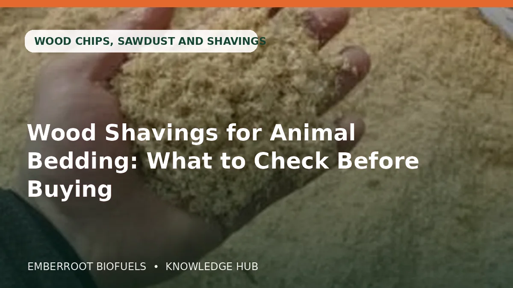

Štěpka, piliny a hobliny jsou užitečné, ale správná specifikace závisí na použití. Zahrada, zvířata, potraviny a průmysl vyžadují jinou čistotu a velikost.
Článek je informační. Před objednávkou nebo použitím paliva ověřte návod zařízení, místní pravidla a přesnou specifikaci produktu.
Na čem záleží nejvíce
Štěpka, piliny a hobliny jsou užitečné, ale správná specifikace závisí na použití. Zahrada, zvířata, potraviny a průmysl vyžadují jinou čistotu a velikost.
Surovina
Ověřte druh dřeva, původní materiál a přítomnost kůry, pojiv, nátěrů nebo ošetřeného dřeva.
Požádejte o údaj písemně a porovnejte jej se štítky a stavem dodávky. Stejný název může označovat různé kvality a balení.
Čistota
Zahrada, podestýlka, vaření a výroba vyžadují jinou kontrolu prachu, kůry a cizích částic.
Požádejte o údaj písemně a porovnejte jej se štítky a stavem dodávky. Stejný název může označovat různé kvality a balení.
Velikost částic
Velikost štěpky, hoblin a pilin mění drenáž, zhutnění, proudění vzduchu a zpracování.
Požádejte o údaj písemně a porovnejte jej se štítky a stavem dodávky. Stejný název může označovat různé kvality a balení.
Vlhkost
Vlhkost ovlivňuje zapálení, využitelné teplo, kouř, stabilitu při skladování a rozpad materiálu.
Požádejte o údaj písemně a porovnejte jej se štítky a stavem dodávky. Stejný název může označovat různé kvality a balení.
Praktické porovnání
| Co kontrolovat | Proč je to důležité |
|---|---|
| Surovina | Ověřte druh dřeva, původní materiál a přítomnost kůry, pojiv, nátěrů nebo ošetřeného dřeva. |
| Čistota | Zahrada, podestýlka, vaření a výroba vyžadují jinou kontrolu prachu, kůry a cizích částic. |
| Velikost částic | Velikost štěpky, hoblin a pilin mění drenáž, zhutnění, proudění vzduchu a zpracování. |
| Vlhkost | Vlhkost ovlivňuje zapálení, využitelné teplo, kouř, stabilitu při skladování a rozpad materiálu. |
| Podmínky skladování | Biomasu udržujte v suchu, nad vlhkou podlahou a chráněnou před deštěm, kondenzací a vysokou vlhkostí. |
Praktický postup krok za krokem
- 1
Určete přesné použití a zařízení nebo proces
- 2
Zapište požadovanou třídu, rozměry a limit vlhkosti
- 3
Zvolte pytel, paletu, big bag nebo volně loženou dopravu
- 4
Potvrďte čistou tonáž, přístup a způsob vykládky
- 5
Vyžádejte písemnou nabídku a dokumenty
- 6
Ověřte platební pokyny důvěryhodným kanálem
- 7
Dodávku před uskladněním zkontrolujte a zdokumentujte
Časté chyby, kterým se vyhnout
- Nakupovat jen podle názvu nebo fotografie bez specifikace
- Ignorovat skladovací prostor a přístup pro vykládku
- Porovnávat cenu bez čisté hmotnosti a dodacích podmínek
- Použít palivo neschválené výrobcem zařízení
- Platba na neověřené bankovní nebo kryptografické údaje
Kontrolní seznam kupujícího
- Produkt a třída jsou přesně uvedeny
- Vlhkost, rozměry a relevantní hodnoty jsou písemně
- Balení a čisté množství jsou jasné
- Je uveden původ, výrobce nebo obchodník
- Dodací podmínky, vykládka a termín jsou dohodnuty
- Příjemce platby a reference jsou ověřeny
- Tvrzení a čísla certifikátů lze nezávisle ověřit
Časté otázky
Je nejlevnější možnost obvykle nejlepší?
Ne nutně. Porovnejte dodanou specifikaci, čisté množství, skladovací ztráty, kompatibilitu a dopravu.
Mám požádat o vzorek?
U větší objednávky může pomoci reprezentativní vzorek nebo aktuální zkouška, musí však odpovídat stejnému produktu a procesu.
Stačí logo certifikace?
Nestačí. Ověřte certifikát nebo firmu v oficiálním systému a zkontrolujte třídu i roli dodavatele.
Kdy mám zaplatit?
Postupujte podle písemné a ověřené objednávky. Příjemce platby potvrďte důvěryhodným kanálem.
Užitečné oficiální zdroje
Potřebujete písemnou nabídku biomasy?
Vyberte produkt a tonáž a odešlete poptávku. Balení, specifikace, dostupnost a doprava budou písemně potvrzeny před platbou.